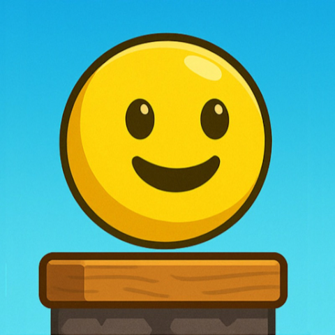
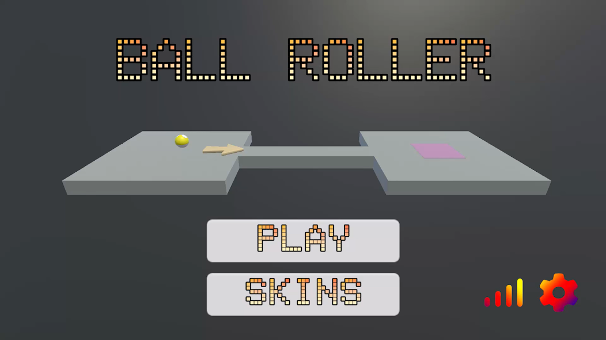

I'm a self-taught indie developer crafting mobile games and web apps from scratch. Welcome to G12 Games.
I'm a 15-year-old self-taught developer from Maharashtra, India. I started coding out of curiosity and quickly fell in love with building things — from mobile games to web platforms.
My journey started with Scratch, HTML, CSS and Javascript, and then expanded into Unity and C# for game development as I built more ambitious projects. Every project I build teaches me something new.
Beyond coding, I love learning how projects work, understanding the needs of my users, and making software that actually gets used. G12 Games is my creative lab where ideas become real products.
From Android games to educational quiz platforms — here's what I've shipped so far.

A fast-paced 3D platformer where you roll a ball through 15 progressively challenging levels. Simple controls, addictive gameplay, built for all ages.

India's quiz platform for ICSE Grade 10 students. Covers all major subjects with a chess-style ELO rating system, leaderboards, and instant feedback.
Thoughts on game dev, web development, and what I've learned building real projects as a teen developer in India.
When I first opened Unity, I had no idea what a Rigidbody was. I just wanted to make something I could show my friends — something real, something playable. Eight months later, Ball Roller 3D was live on the Google Play Store. Here's what I actually learned building it from scratch.
The biggest trap new game developers fall into is trying to build the next big hit on their first attempt. I avoided this (barely) by picking the simplest mechanic I could think of: roll a ball, don't fall off. That's it. The genius of simple mechanics is that they let you focus all your energy on making the feeling of play right before worrying about content, story, or systems.
In Ball Roller 3D, getting the physics to feel satisfying took weeks. The ball needed to feel heavy but responsive. Too much friction and it felt sluggish; too little and it was impossible to control. Tuning these tiny values — drag, angular drag, mass — taught me more about game feel than any tutorial I'd watched.
I designed 15 levels, and the difficulty curve was the hardest part to get right. Early on, my "easy" levels were confusing and my "hard" levels were just annoying rather than challenging. The difference between a hard level that feels fair and one that feels cheap is about visual clarity and consistent rules. If a player fails, they need to immediately understand why — and feel like they could do better with more skill.
I ended up playtesting each level dozens of times, and having a second developer (my co-dev) play through fresh to spot places where the design was unclear. Fresh eyes are invaluable. Never test your own game in isolation.
The publishing process was surprisingly technical. Google requires a signed APK, a privacy policy (even for simple games), screenshot assets in multiple resolutions, and a content rating questionnaire. Building the store listing taught me a lot about app marketing — writing a description that actually explains the game, picking the right category, and optimizing for discoverability.
The most humbling moment? Watching the install count hover near zero for the first week. Organic discovery on the Play Store is brutally hard without any marketing budget. This pushed me to learn about ASO (App Store Optimization) and think more carefully about keywords and visuals.
Building Ball Roller 3D was the best education I've had. No classroom teaches you how to ship. If you're thinking about making a game, start today — with the simplest idea you have. Done is better than perfect.
Padhai 24x7 started as a simple idea: what if studying for ICSE board exams felt less like a chore and more like a game? The ELO rating system — borrowed from chess — was the core hook. Here's how I built it and what surprised me along the way.
A lot of beginner developers think they need React, Next.js, or some big framework to build anything real. For Padhai 24x7, I went with plain HTML, CSS, and JavaScript — and it was the right call. No build step, no dependencies to maintain, instant deployment via GitHub Pages. The entire project went from idea to live URL in a weekend.
The lesson: pick the simplest tool that solves the problem. Frameworks add power but also complexity, and when you're learning, complexity slows you down. Master the fundamentals first.
The standard ELO formula adjusts a player's rating based on the expected vs actual outcome of a match. Adapting this for quizzes meant treating each question attempt as a "match" — a high-scoring quiz raises your ELO, a low-scoring one lowers it. The challenge was calibrating the K-factor (how much ratings shift per result) so changes felt meaningful but not volatile.
I also had to think carefully about fairness: a student who takes 50 quizzes shouldn't be unfairly punished by a single bad session. Adding a soft floor to the ELO and dampening changes for high-volume users made the system feel more motivating and less frustrating.
The UX decisions I made for Padhai 24x7 were different from anything I'd built before, because the users were stressed. Students preparing for board exams don't want friction — they want to open the app, pick a subject, and start practicing immediately. This meant:
The biggest UX lesson: remove every step between a user's intention and the action. Every extra tap or click is a reason to leave.
GitHub Pages hosts Padhai 24x7 completely free. For a static web app with no server-side logic, this is perfect. The trade-off is that all data lives in the browser (localStorage), which means leaderboards are local rather than global. A future version with a proper backend (Node.js + a lightweight database) would enable real cross-device leaderboards and persistent national rankings.
This experience taught me a lot about progressive enhancement — start with what you can ship, then improve it. A working product with local leaderboards is infinitely more valuable than a half-built app waiting for a perfect backend.
In 2023, Unity shocked the game development world by announcing a controversial runtime fee — a charge per install beyond a threshold, retroactively applied to existing games. The backlash was enormous. Thousands of indie developers migrated to Godot, an open-source engine that had quietly grown into a capable alternative. After working with Unity on Ball Roller 3D and experimenting with Godot for a side project, here's my honest comparison from a student developer's perspective.
Unity is the engine that most 3D mobile games are built with, and for good reason. The asset pipeline, the physics engine, and the documentation are all excellent. When I needed to implement Rigidbody physics for Ball Roller 3D, there were hundreds of tutorials, Stack Overflow answers, and YouTube guides available within seconds of Googling.
Unity's biggest strength is its ecosystem. The Asset Store has thousands of plugins, animations, and tools that can save weeks of development time. For 3D mobile games especially, Unity's build pipeline for Android is well-tested and reliable. The IL2CPP backend produces fast native code and the APK build process is straightforward once you understand the steps.
The downsides: Unity is heavy. The editor takes time to load, and compilation times can be frustrating on a mid-range laptop. The free tier (Personal) is good for students, but some features are locked behind paid plans. And yes, the trust damage from the runtime fee controversy is real — even though Unity walked back most changes, the perception that Unity would change pricing without warning has made many developers cautious about long-term commitment.
Godot is open-source, which means it is free forever — no royalties, no runtime fees, no corporate agenda. The entire editor is under 100MB, remarkable compared to Unity. It boots fast and runs well even on low-spec hardware. Godot uses its own scripting language, GDScript, which is similar to Python and very beginner-friendly. There's also C# support for developers who prefer it. For 2D games, Godot is genuinely excellent — arguably better than Unity's 2D tooling. For 3D, Godot 4 made massive improvements but still trails Unity in maturity for mobile deployment.
If you're making your first 3D mobile game and want to publish on Google Play, start with Unity. The learning resources are simply better and the Android build pipeline is more reliable. If you're making a 2D game — platformers, puzzle games, top-down shooters — try Godot. You'll be surprised how fast you can prototype ideas.
The best engine is the one you actually finish a project in. Don't spend months debating tools. Pick one, build something small, and ship it.
One of the most common questions from beginner web developers is: "Where do I host my project for free?" When I first wanted to put Padhai 24x7 online, I had no idea where to start. Here's a practical guide based on what I've actually used, tested, and deployed on.
GitHub Pages is what I use for Padhai 24x7, and it's perfect for static websites — sites with no server-side logic, just HTML, CSS, and JavaScript. You push your code to a GitHub repository, enable Pages in the repo settings, and your site is live at username.github.io/repo-name within minutes. Completely free, no credit card required, automatic HTTPS, and deployment is just a push. The only limitation: static only. No Node.js, no databases, no server-side rendering.
Netlify does everything GitHub Pages does, but better. Automatic deployments on every Git push, instant rollbacks if something breaks, form handling without a backend, and serverless functions for light backend logic. The free tier is very generous. If I were rebuilding Padhai 24x7 today and wanted form submissions to actually work with email delivery, I'd use Netlify Forms — it requires zero backend code.
Vercel is built by the team behind Next.js and is the default deployment choice for React apps. Connect your GitHub repo, and every pull request gets a live preview URL automatically. The free tier supports personal projects with reasonable limits. If you're learning React or building a portfolio with a modern JavaScript framework, Vercel makes deployment almost invisible.
For projects that need a Node.js server, a database, or a Python backend, Railway and Render are the best free options. Both support persistent deployments and can host databases like PostgreSQL. Railway has a small monthly free credit. Render's free tier spins down inactive services after inactivity, which causes a slow first load — but for student projects and portfolios, this trade-off is usually fine.
Start with GitHub Pages or Netlify for everything static. When you need a backend, move to Render or Railway. Vercel is the right call the moment you start using React or Next.js seriously. None of these require a credit card for student-scale usage.
I've played mobile games with beautiful 3D graphics that felt terrible to control, and I've played simple pixel-art games that felt so satisfying I couldn't put them down. The difference between them is something developers call game feel — and it's the single most underrated concept in game development.
Game feel is the tactile, moment-to-moment sensation of interacting with a game. It's the slight screen shake when you land a jump. It's the subtle audio cue when you collect a coin. It's the way a character briefly squishes before launching into a jump. None of these things affect gameplay mechanically, but they all make the game feel alive, responsive, and satisfying. What matters is that the player's inputs feel connected to the world.
1. Responsive Input: There should be near-zero latency between a player's action and the game's response. Any delay makes controls feel "floaty" or disconnected. In Unity, this means keeping physics update rates consistent and avoiding unnecessary delays on movement code.
2. Juice (Visual Feedback): "Juice" is the game dev term for visual feedback that makes actions feel rewarding — screen shake, particle effects, brief flashes of color. Even a simple ball rolling game benefits from dust particles kicking up when the ball skids on a sharp turn.
3. Audio Feedback: Sound is half the feeling. A rolling ball with no sound feels wrong immediately. Adding a subtle rolling sound that changes pitch with speed transforms the experience. Free assets from sites like freesound.org are more than enough to make a huge difference.
4. Weight and Momentum: Objects in games should feel like they have mass — they don't start or stop instantly. A ball should build momentum going downhill and resist sudden direction changes. Angular drag and linear drag settings in Unity's physics engine control this.
5. Clear Cause and Effect: Every action should have an obvious, satisfying reaction. When you fall off a platform, the reason should be instantly readable. Clear feedback removes frustration and makes difficult levels feel fair rather than arbitrary.
Build a simple scene where a character jumps. Then add these one at a time: a squish-and-stretch animation on jump, a small dust particle on landing, a "boing" sound effect, and a brief camera shake on hard landings. Each change takes maybe 20 minutes, but together they make the game feel completely different. That's the power of game feel.
When I first learned CSS layout, I used Flexbox for everything. Then I learned Grid and started using that for everything instead. Eventually I realized the answer isn't either/or — they solve different problems and work best together. Here's how I think about it after building multiple web projects.
Flexbox is for one-dimensional layout — either a row or a column. Grid is for two-dimensional layout — rows and columns at the same time. That's really all you need to remember. Everything else follows from this distinction.
Use Flexbox when you're laying out items in a single direction and want them to respond to available space. Navigation bars are the classic example: items in a row, spaced evenly, that wrap gracefully on small screens. Button groups, form fields side by side, cards in a scrolling row — these are all Flexbox problems. Flexbox is also the modern standard for centering things: display: flex; align-items: center; justify-content: center; works reliably and is now the go-to approach.
Use Grid when you have a two-dimensional layout where rows and columns need to align with each other. Page layouts — header, sidebar, main content, footer — are Grid problems. So are image galleries where you want photos to align in a strict grid. The game cards on this page use grid-template-columns: repeat(auto-fit, minmax(300px, 1fr)), which creates a responsive grid that automatically adjusts the number of columns based on available space.
Grid also lets you overlap elements, create asymmetric layouts, and place items in specific named areas — things that are very difficult with Flexbox alone.
Most real-world layouts use both. Grid handles the macro layout — the big sections of the page. Flexbox handles the micro layout — the contents inside each section. For example: Grid lays out a card grid, Flexbox arranges the content (icon, title, description, button) inside each card vertically. This pattern appears everywhere once you start looking for it.
The best way to get comfortable with both is to open browser DevTools, inspect real websites you admire, and see which one they're using where. CSS layout is a skill you build by reading code, not just writing it.
Monetization is one of the most uncomfortable topics in indie game development, especially for small developers who genuinely care about the games they make. I thought about this carefully while building Ball Roller 3D, and I want to share the framework I landed on — one that respects players while still allowing the game to generate some revenue.
Mobile game monetization runs from completely ethical to genuinely predatory. On the good end: a one-time purchase, an optional cosmetic store, or minimal rewarded ads. On the bad end: energy timers designed to frustrate players into paying, loot boxes targeting compulsive spending, and interstitial ads that interrupt gameplay every 60 seconds. As an indie developer, you have full control over where on this spectrum your game lands.
Paid upfront: Charge a small price (₹50–₹200 in India) to download the game. No ads, no IAP. Players who pay are committed and more likely to leave positive reviews. The downside is a much smaller download volume — most mobile users won't pay for apps they haven't tried.
Free with rewarded ads: The game is free, but players can watch optional video ads to earn extra lives, hints, or skip a difficult level. This is the model I used for Ball Roller 3D. The key word is optional — players who never watch an ad should still be able to finish the game. Forced or interstitial ads are the version of this model that players despise.
Free with a one-time unlock: The core game is free; a one-time in-app purchase removes ads and unlocks extra content. This rewards players who love the game while keeping the barrier to entry at zero. It's the model I'd recommend for most indie platformers because it aligns the developer's incentives with the player's experience — you only get paid if the game is good enough that someone wants to keep playing.
On my next game, I'd launch free with optional rewarded ads, add a ₹99 "remove ads + bonus levels" IAP, and focus all energy on making the base game so good that players want to support it. Build something people love first. The monetization should feel like a thank-you, not an obstacle.
I learned JavaScript mostly by copying code from tutorials and Stack Overflow until things worked. This approach gets you surprisingly far — but it leaves gaps. There are concepts that trip up every self-taught developer until they finally sit down and understand them properly. Here are the five I struggled with most.
Don't use var. It has function scope and gets "hoisted" in ways that cause subtle bugs. Use const for values that don't change (most things), and let for values that do (loop counters, state that gets updated). If you're unsure, start with const and change it to let if you get an assignment error.
this Works (and Why It Breaks)this refers to the object currently executing the function — but what that object is depends on how the function is called, not where it was defined. The most common bug: passing a method as a callback and losing the original this context. The fix is arrow functions, which inherit this from their enclosing scope. When in doubt, use arrow functions for callbacks.
JavaScript runs on a single thread, but many operations take time — fetching data from an API, waiting for user input. JavaScript handles this with an event loop and asynchronous code. Promises represent a value that will be available in the future. The modern syntax, async/await, makes asynchronous code look synchronous and is much easier to read than chained .then() calls. Learn async/await early — you'll use it constantly in real projects.
Most beginner JavaScript developers write for loops for everything. Array methods are more expressive and less error-prone. map() transforms every element of an array and returns a new array. filter() returns a new array containing only elements that pass a test. reduce() accumulates all elements into a single value. These three methods cover the vast majority of array operations you'll encounter in real code.
The HTML of a webpage is represented in memory as a tree of JavaScript objects — the Document Object Model. Every element is an object with properties you can read and modify. When you call document.getElementById('myDiv').style.color = 'red', you're just setting a property on a JavaScript object. Understanding this mental model makes DOM manipulation feel natural instead of magical.
Getting difficulty right is one of the hardest design challenges in game development. Too easy and players get bored. Too hard and they quit. After designing 15 levels for Ball Roller 3D and watching playtests go both right and horribly wrong, here's what I've actually learned.
Hungarian psychologist Mihaly Csikszentmihalyi described "flow" as a mental state of complete absorption — the feeling of being in the zone. Games can reliably induce this state when difficulty is calibrated so that the challenge is just beyond the player's current skill. Too far below their skill and they're bored; too far above and they're frustrated. For a 15-level game, the first few levels should be almost trivially easy — not to insult intelligence, but to teach controls and rules without pressure.
Each level in Ball Roller 3D was designed to introduce or emphasize a single new challenge. Level 3 introduces the first moving obstacle. Level 7 introduces a narrower path. Level 11 combines narrow paths with moving obstacles for the first time. This principle — introduce concepts one at a time, then combine them later — keeps the game feeling fair even as it gets harder. When I violated this principle (usually because I thought a level was getting boring), players got confused and frustrated.
I cannot overstate how wrong my difficulty estimates were before playtesting. Levels I thought were easy were genuinely hard for fresh players. Levels I worried were too hard turned out fine once players got used to the controls. You are the worst possible judge of your own game's difficulty because you've played it hundreds of times. Get at least three people who have never seen your game to play through it, and watch them — don't give hints, just observe where they get stuck.
Even when a level is hard, players will keep trying if they feel like they're making progress. Visual indicators (level numbers, percentage complete), small mid-level checkpoints, and clear signs that the end is near all help. The worst experience is a long, hard level where you can't tell how close you are to finishing. Keep players informed, and they'll keep playing.
I lost two weeks of game development work because I didn't use Git. The hard drive didn't die, I didn't get hacked — I just made a series of bad edits, couldn't undo them, and had no backup. That experience motivated me to actually learn Git properly, and it's now one of the most valuable tools in my workflow. Here's the conceptual foundation I wish I'd had from the start.
Git is a version control system — software that tracks every change you make to a set of files over time. Think of it as an unlimited undo history for your entire project, with the ability to branch off into experiments without affecting your main work. GitHub is not Git — GitHub is a website that hosts Git repositories online, making it easy to share code and back it up remotely. You can use Git without GitHub (locally only), but using them together is standard practice.
Every file in a Git repository is in one of three states. Modified means you've changed the file but haven't told Git about it yet. Staged means you've marked the changes to include in the next commit. Committed means the changes are safely saved in the local repository history. The workflow is: edit files → stage changes (git add) → commit (git commit). That's the core loop, and it's most of what you'll ever do.
A branch is an independent copy of your code where you can experiment without affecting the main version. Create a branch: git checkout -b new-feature. If the experiment works, merge it back into main. If it doesn't, delete the branch and nothing is lost. I use branches for every significant feature change in my projects now — it's saved me from bad decisions multiple times.
git status — see what's changedgit add . — stage all changesgit commit -m "message" — save a snapshot with a descriptiongit push — upload commits to GitHubgit pull — download the latest changesThat's honestly most of what you need for solo projects. Don't let tutorials overwhelm you with rebase, cherry-pick, and advanced merge strategies before you've built the habit of committing regularly. Commit early, commit often, write meaningful messages. That discipline alone puts you ahead of most beginner developers.
I've been coding since I was 10, starting with Scratch and working my way up to Unity, JavaScript, Java, and Python. Along the way I've tried a lot of different learning approaches — some that accelerated my progress enormously, and some that wasted months of time. Here's what I've actually found to work.
"Tutorial hell" is when you spend months watching coding tutorials and following along, but never feel ready to build something on your own. The problem is that following a tutorial feels like learning, but it isn't really — you're transcribing someone else's decisions, not making your own. You can follow 50 Unity tutorials and still freeze when faced with a blank project. The cure: give yourself projects with no tutorial to follow. Even small ones. Build a simple calculator. Make a quiz about your favorite topic. Clone a game mechanic you like. You'll get stuck, and the process of getting unstuck is where real learning happens.
My progress accelerated dramatically when I stopped doing generic exercises and started building things I genuinely wanted to exist. Ball Roller 3D was a game I would have played. Padhai 24x7 was a study tool I would have used. The motivation to finish a project you care about pushes you through the confusing parts that would make you quit a "learn to code" exercise.
Open-source projects on GitHub are an underused learning resource. Find a small project in a language you know, read through the code, and try to understand every line. Where you don't understand something, Google it. This teaches you patterns and idioms that tutorials rarely cover — things like how experienced developers structure files, name variables, and handle errors gracefully.
Age is less of a barrier to coding than most people think. The internet doesn't care how old you are. Your GitHub doesn't show your age. Your apps on the Play Store are judged by users who just want a good app, not by your birth year. Being young means you have more time to build, more tolerance for failure, and less to lose from experimenting. Use that. Ship things. Break things. Read widely. The developer community, at its best, is one of the most generous and collaborative communities in the world.
Unity's physics system is built on Nvidia PhysX and handles the simulation of rigid body dynamics — how objects with mass, velocity, and forces interact with each other and the environment. For a game like Ball Roller 3D, the physics engine is essentially the entire gameplay system. Getting comfortable with how it works makes the difference between a game that feels good and one that feels broken.
Any GameObject that should be affected by physics needs a Rigidbody component. It stores the object's mass, velocity, angular velocity, drag, and angular drag. The most important properties for a ball game: Mass affects how forces change velocity (heavier objects accelerate slower). Drag is like air resistance — it slows linear movement. Angular Drag slows rotational movement. For Ball Roller 3D, I used low drag values so the ball built up speed naturally on slopes, with enough angular drag to prevent it spinning uncontrollably.
There are two main ways to move a Rigidbody: applying forces (rb.AddForce()) or setting velocity directly (rb.velocity = new Vector3(...)). Forces are more physically accurate — they interact with mass, drag, and other physics objects naturally. Direct velocity changes are more predictable and responsive, but can feel "snappy" or unphysical. For player-controlled movement in Ball Roller 3D, I used a hybrid: apply forces for most movement, but cap the maximum velocity to prevent the ball getting out of control on steep descents.
Unity offers three collision detection modes. Discrete is the default and checks for collisions at fixed time intervals — fast objects can "tunnel" through thin walls. Continuous prevents tunneling for the object against static geometry. Continuous Dynamic prevents tunneling against both static and dynamic objects. For a fast-moving ball on narrow platforms, Continuous mode is important. Early in development, Ball Roller 3D had a bug where the ball would occasionally fall through thin platform edges at high speed — switching to Continuous collision detection fixed it immediately.
Physics code in Unity should almost always go in FixedUpdate(), not Update(). Update() runs every frame, which varies with framerate. FixedUpdate() runs at a fixed time interval (50 times per second by default) that is independent of framerate. Applying forces in Update() means the game behaves differently on a 30fps phone versus a 60fps phone. Putting physics in FixedUpdate() keeps behavior consistent across all devices — this is one of the most common beginner mistakes in Unity and one of the easiest to fix once you know about it.
Game feedback, collab ideas, questions about my code — my inbox is open.